Upcoming: Distinguished Lecture
More on Prof. Cho later in this lecture.
Who am I?
- Now
- Assistant Professor, Waterloo CS · Associate, Harvard CS · Faculty Affiliate, Vector Institute
- Research
- Natural language processing & machine learning
- Before
- Postdoc at AI2 · PhD at Harvard (Rush, Shieber) · MS at CMU (Xing) · BE at Tsinghua (Zhou)
Who are the TAs?
- Liliana Hotsko (
lhotsko@) — Piazza - Bihui Jin (
b27jin@) - Larry Yinxi Li (
y3395li@) - Yuxuan Li (
y624li@) - Henry Lin (
h293lin@) - Hala Sheta (
hsheta@) - Dake Zhang (
d346zhan@)
All emails end with @uwaterloo.ca.
Course roadmap
4 modules · 23 lectures
Module 1 — Search (L2–L6)
- Generic search algorithm + complexity / completeness
- Uninformed: DFS, BFS · Heuristic: A*
- Constraint satisfaction problems + arc consistency
- Local search: simulated annealing, genetic algorithms
Module 2 — Uncertainty (L7–L12)
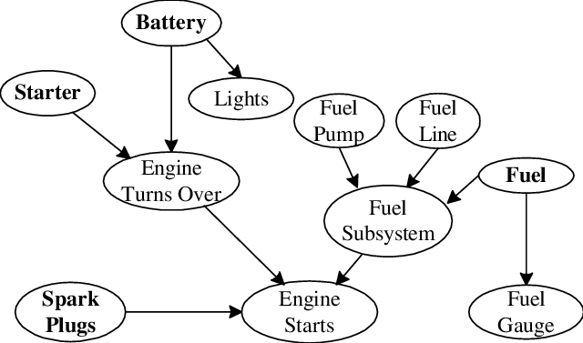
- Probability rules + independence + Bayes' rule
- Bayesian networks + D-separation
- Variable elimination for inference
- Hidden Markov Models + Forward–Backward
Module 3 — Markov Decision Processes (L13–L16)
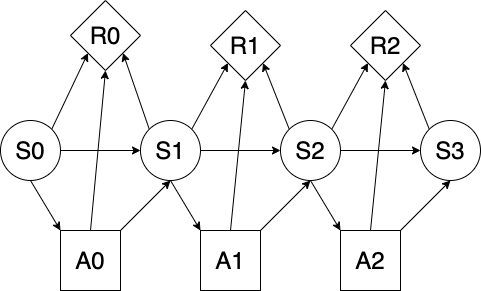
- Decision theory: actions, utility, expected utility
- MDPs: making a sequence of decisions under uncertainty
- Value iteration for optimal policies
- Reinforcement learning: TD learning + Q-learning
Module 4 — Machine & Deep Learning (L17–L22)
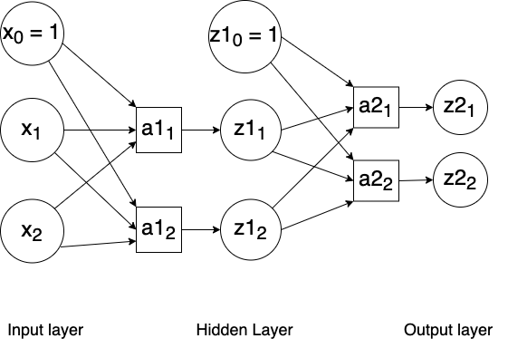
- Supervised vs. unsupervised · bias–variance trade-off
- Unsupervised: k-means clustering
- Decision trees
- Neural networks + backpropagation
Getting help
- Office hours — instructor + 5 TAs across the week (see next slide). Best way to reach me.
- Piazza — public posts for course content, private posts for personal issues. We aim to reply within ~2 business days.
- Email — only for confidential matters.
Office hours
Start the week of May 18. Zoom links one-click on the course website.
| Day | Time | TA | Where |
|---|---|---|---|
| Mon | 2:00–3:00 PM | Dake Zhang | Zoom |
| Mon | 3:00–4:00 PM | Yuxuan Li | DC 2305 / Zoom |
| Wed | 1:00–2:00 PM | Hala Sheta | Zoom |
| Thu | 10:00–11:00 AM | Henry Lin | Zoom |
| Fri | 3:00–4:00 PM | Bihui Jin | TBA |
Instructor office hours TBA. Liliana Hotsko runs Piazza (no OH). Larry Yinxi Li TBA.
Assignments
- 3 assignments, ~20 days each.
- Written + programming parts.
- Submit everything on Learn.
Project
- CS 686: required (30% of grade).
- CS 486: optional (+10% bonus).
- Individual or groups up to 3.
- Topic open: RL, vision, NLP, biomedical, etc. — not a public-GitHub clone.
- Proposal mid-term; final report after the exam.
Final exam
- 2.5 hours, date/time TBA.
- No makeup exam.
- CS 486 students must pass the exam to pass the course.
- Covers all course material.
Score breakdown
Birth of AI

- Alan Turing (1912–1954): WW2 codebreaker; asked "Can machines think?"; proposed the imitation game.
- Dartmouth, 1956: John McCarthy coins the term artificial intelligence.
- McCarthy also invents Lisp.
The Turing Test
If the machine fools the interrogator, it "passes" the Turing Test.
ELIZA — pattern matching that "fooled" people (Weizenbaum, 1966)
ME: Hi ELIZA: How do you do? What brings you to see me? ME: I'm thinking of taking a course in artificial intelligence. ELIZA: Why do you say that? ME: I'm worried about it ELIZA: Are you worried often? ME: when I take AI courses ELIZA: What happened when you take ai courses? ME: I usually spend long nights doing assignments ELIZA: Earlier you said you felt worried? ME: about AI courses ELIZA: Maybe your plans have something to do with this. ME: no ELIZA: Why not? ME: because I think you are a computer ELIZA: Is it because you think I am a computer that you came to me?
Loebner Prize — the Turing-Test competition, 1990–2019
- Annual Turing-style contest, launched by Hugh Loebner.
- Grand prizes ($25K text-only / $100K text + audio + video) never awarded.
- Replaced today by modern LLM evaluations.
CONFEDERATE: Hello, my name is Sam and I am the human JUDGE: Hi Sam, tell me which is larger, a TV screen or Belgium. CONFEDERATE: Belgium is a little bit larger. JUDGE: Wljso lwjejdo wleje elwjeo wjeol, isn't it? CONFEDERATE: Is that Polish? JUDGE: Which is further away from this apartment, Queens or the Queen of England? CONFEDERATE: If the Queen is visiting Manhattan, she is closer.
SHRDLU — Winograd, 1968
- First system that linked language to a (virtual) physical world.
- Tiny domain: a "blocks world".
Pick up a big red block OK Grasp the pyramid I DON'T UNDERSTAND WHICH PYRAMID YOU MEAN What does the box contain? THE BLUE PYRAMID AND THE BLUE BLOCK. What is the pyramid supported by? THE BOX. How many blocks are not in the box? FOUR OF THEM
Games as an AI testbed
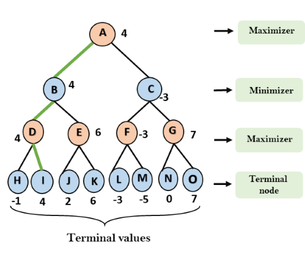
- Min–max: one player maximizes, the other minimizes.
- Game playing = search over states.
Chess — Deep Blue, 1997

- ~\(10^{100}\) game-tree states.
- 1997: IBM Deep Blue defeats Garry Kasparov, 3.5–2.5.
- Method: deep lookahead + handcrafted evaluation.
Go — AlphaGo, 2016
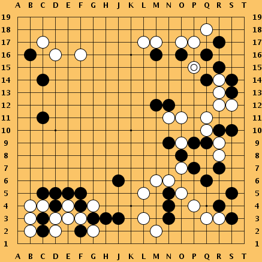
- ~\(10^{360}\) states — far beyond brute-force search.
- 2016: AlphaGo (DeepMind) defeats Lee Sedol 4–1.
- Recipe: Monte-Carlo tree search + value net + policy net + self-play.
Poker
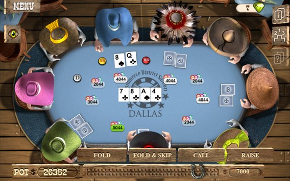
- Hidden information + opponent modeling + long-term reward.
- 2015: heads-up limit hold'em solved.
- 2019: superhuman 6-player no-limit poker.
Atari games
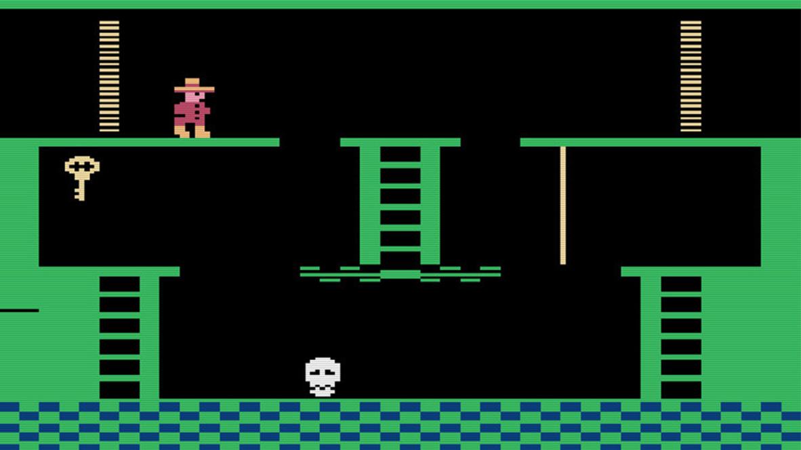
- End-to-end RL on raw pixels — CNN + Q-learning.
- Beat humans on 3 / 7 Atari 2600 games tested.
- The starting point for modern deep RL.
StarCraft II — AlphaStar, 2019
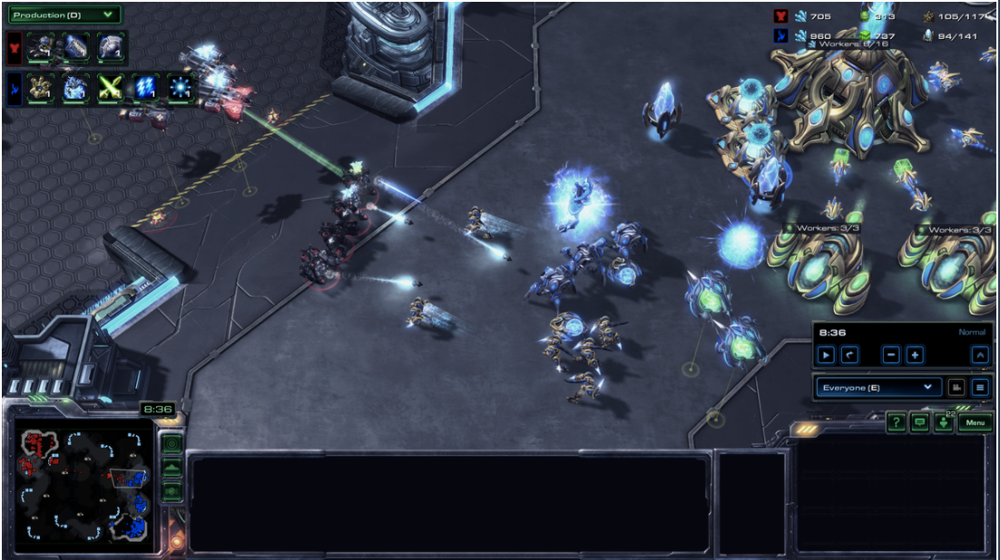
- Multi-agent, imperfect information, huge action space.
- Grandmaster level via multi-agent RL + league self-play.
AlphaFold — protein structure

- Predicts 3D protein structure from sequence.
- EvoFormer architecture + Protein Data Bank training.
- Reduced months-to-years of lab work to minutes.
The deep learning era
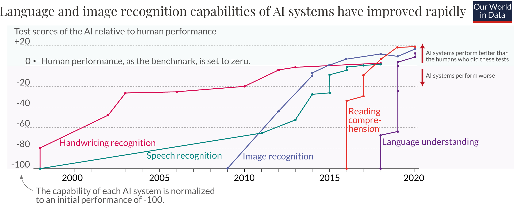
- Pre-2012: SVMs, decision trees, boosting.
- 2012: AlexNet on ImageNet → deep learning takes off.
- AI has surpassed humans on classic benchmarks; harder ones (GPQA, SWE-bench, ARC-AGI) still rising fast.
ImageNet — the spark
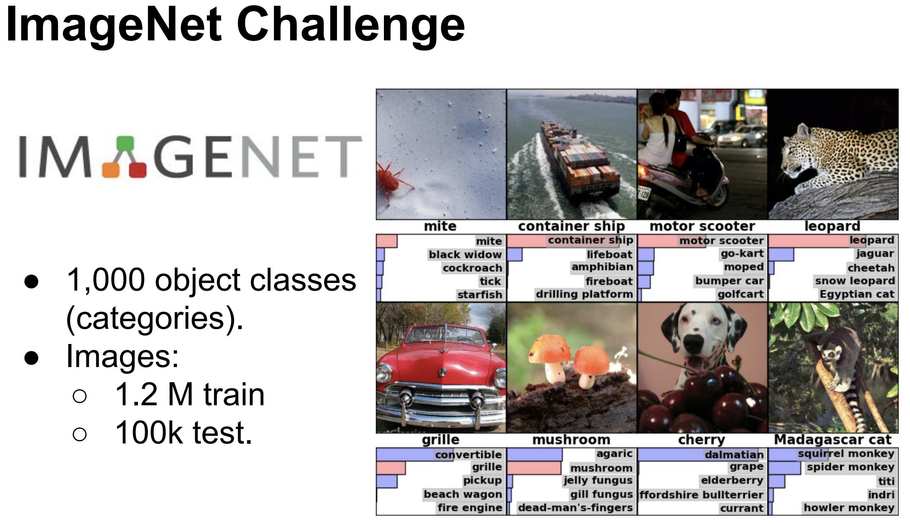
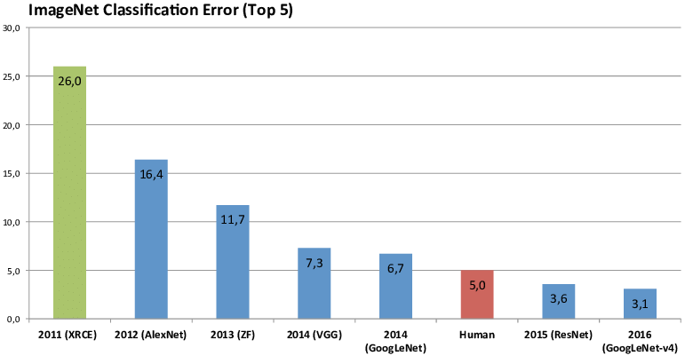
1000-class image classification. The curve was flat — then AlexNet (2012) arrived. Today: essentially solved.
Image generation
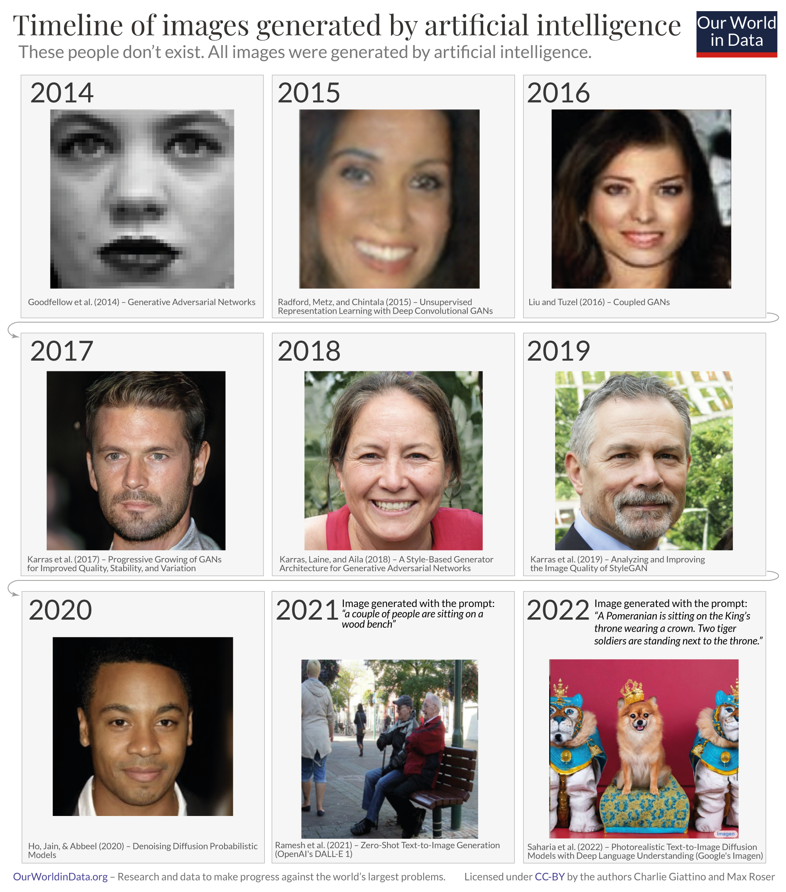
A decade of AI-generated faces.
Supervised vs. self-supervised
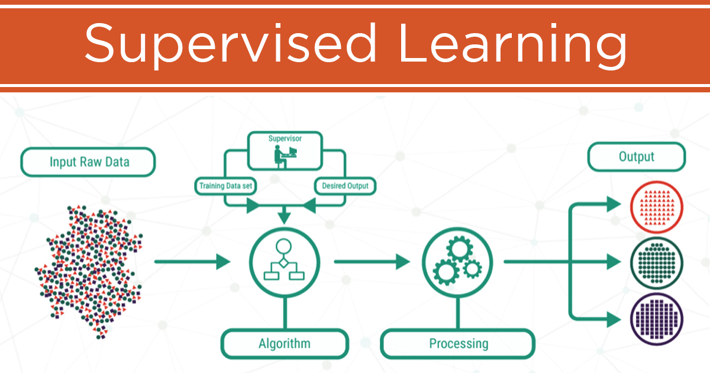
Supervised: humans label data.
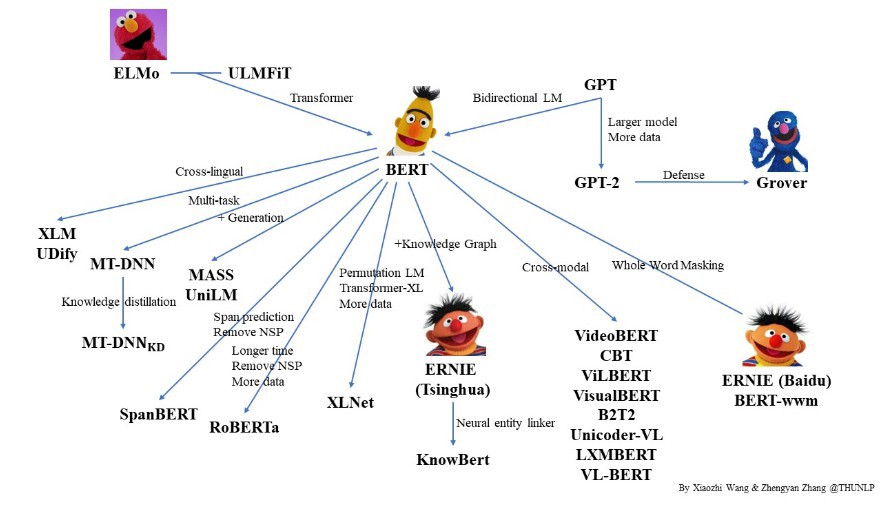
Self-supervised: model predicts parts of unlabeled data.
Large language models — 2026 frontier
- From GPT-3 (2020) and ChatGPT (2022) to today's GPT-5.5, Claude Opus 4.7, Gemini 3.1 Pro.
- Strong open-weight competitors: Llama 4, DeepSeek V4, Qwen 3.6, GLM-5.1.
- Mixture-of-Experts is standard; closed labs no longer publish parameter counts.
What today's LLMs can do
Reasoning
"Thinking" models trade inference compute for hard math, science, coding (o-series, DeepSeek-R1).
Long context
1M+ token windows — whole codebases or books in a single prompt.
Multimodal
Text, images, audio, video in one model.
Agentic tool use
Calls tools, browses, executes code over long horizons (MCP, Claude Code, agent modes).
What this course IS (and is NOT)
IS — Classical AI (~1970s–2000s)
- Search (DFS, BFS, A*, CSPs, local search)
- Probabilistic reasoning (Bayes nets, HMMs, variable elimination)
- Decision-making under uncertainty (MDPs, value iteration, basic RL)
- Foundations of ML (decision trees, basic neural nets, backprop)
IS NOT — Modern AI
- Training / building LLMs (GPT, Claude, Gemini)
- Prompt engineering or agentic LLM applications
- Modern deep learning at scale (transformers, diffusion, foundation models)
- Production ML systems, GPU clusters, RAG, fine-tuning
This is how “search” is done in 2026
Karpathy's autoresearch, March 2026 — not the informed / uninformed search in our L2–L6 module.
Karpathy stripped nanochat down to a single-GPU, ~630-line training repo. The agent edits train.py; the human only edits the prompt that drives the agent. Each training run is a fixed 5 minutes.
~12 experiments per hour. ~100 while you sleep. Winners are committed to a feature branch.
autoresearch, March 2026.
Announcement: x.com/karpathy/status/2030371219518931079.
What an overnight autoresearch run looks like
Karpathy's published progress.png — 83 experiments, 15 kept (green). Lower validation BPB is better.

Gray dots: tried and discarded. Green dots: kept. The agent autonomously tuned batch size, warmup, warmdown, depth, window pattern, RoPE base frequency — and yes, even the random seed.
autoresearch, March 2026. Chart from the repo's progress.png.
My take: this is what replaces classical AI
Personal opinion. Not consensus.
Codex (OpenAI, May 2026) writes & iterates a pure-Python Breakout policy. No neural network trained.
Same recipe: MuJoCo Ant 6000+, HalfCheetah ~11,800 (Deep-RL range); Atari57 median ≈ PPO across 342 unattended runs.
Distinguished Lecture: Prof. Kyunghyun Cho (NYU)
Professor of CS & Data Science at NYU; Co-Director of the Global Frontier AI Lab (with Yann LeCun).
Co-author of two foundational papers in modern NLP:
- The GRU recurrent unit (Cho et al., 2014).
- The seminal attention mechanism for translation (Bahdanau, Cho, Bengio, 2015) — direct ancestor of today's LLMs.
His work directly inspired my PhD.
Tue May 26, 10:00–11:30 AM · DC 1302 · kyunghyuncho.me